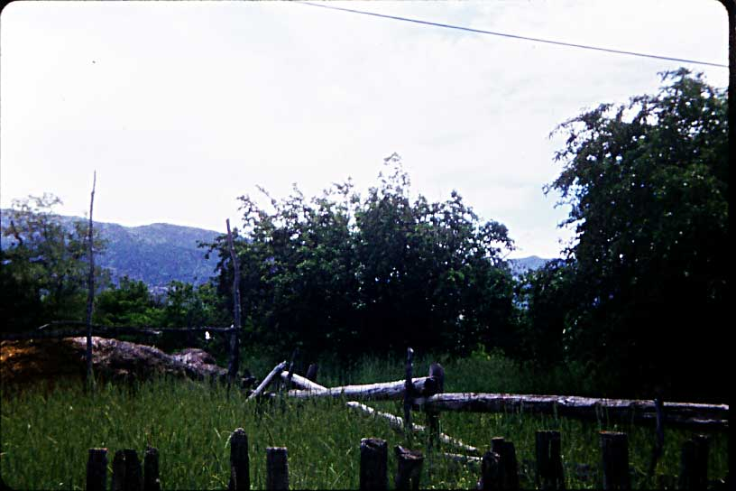
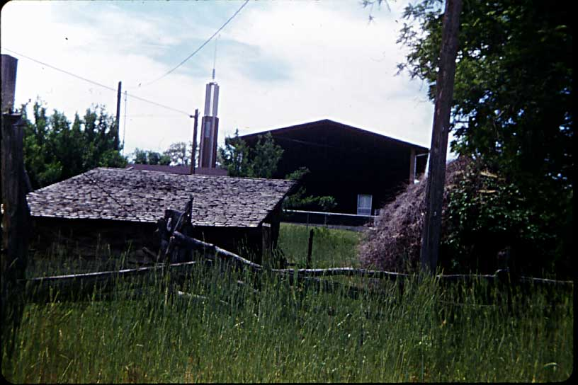

Here are some pictures taken of the Eddie Jacobson home in Oak City before it was torn down. To read a few details of the history of the home click here.
(More pictures below the maps)
Tour of the inside of the house.
This is a view of the north and east sides of the house.
The root cellar was on the north side of the house.
The Garage was a large structure that contained a granery.
The corn crib and out buildings in the back.
A view of fences and haystack.

The outhouse was covered with vines.

This shows Arvilla working in the back yard.
This is a view of the school across the street.